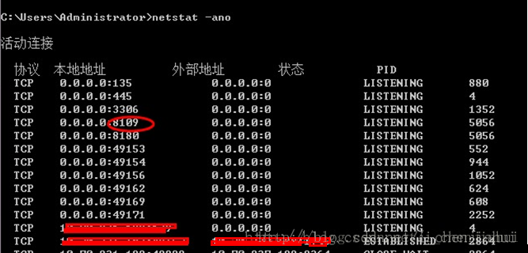
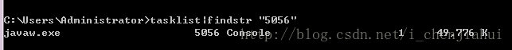
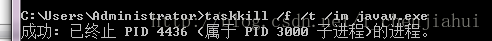
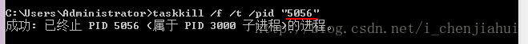

版权声明：本文为博主原创文章，未经博主允许不得转载。 https://blog.csdn.net/i_chenjiahui/article/details/25695365
原文地址：http://blog.csdn.net/i_chenjiahui/article/details/25695365
1、Windows平台
在windows命令行窗口下执行：
1.查看所有的端口占用情况
netstat -ano

2.查看指定端口的占用情况
netstat -aon|findstr "8109"
C:\Users\Administrator>netstat -aon|findstr "8109"
TCP 0.0.0.0:8109 0.0.0.0:0 LISTENING 5056
TCP [::]:8109 [::]:0 LISTENING 5056
找到两条，端口被进程号为 5056的进程占用，继续执行下面命令： （也可以去任务管理器中查看pid对应的进程）
3.查看PID对应的进程
tasklist|findstr "5056"

javaw.exe占用了8109的端口（一开始就知道是它了，这里只是作为演示用）。
4.结束该进程

一般服务器上都是会有多个tomcat的，这样kill不是很科学。可以直接根据PID来kill：
